Project report · Environmental Hacks 2026 (WeMakeDevs × AWS) · Track 02 Heat and Water · Team Mavricks: Arpit Singh, Pradyuman Sharma · 11 October 2026
Built on AWSWhatsAppIoT CoreBedrock + Cedar
Website: https://yj61i9i7g0.execute-api.ap-south-1.amazonaws.com · GitHub: github.com/LSUDOKO/Pehra · WhatsApp: +1 555 648 9580 (test number) · Live 3D twin: /twin/view_SvbNnihTsWfcju52eyfKZA?demo=1
1. The problem
India warns its people with a thermometer. The body cools by sweating; on a humid day sweat does not dry and the cooling stops, so a humid 36 °C day can hurt a worker more than a dry 42 °C day. Safety scientists measure this with WBGT (Wet Bulb Globe Temperature: temperature, humidity, sun and wind in one number); NIOSH, OSHA and many armies use it to decide when work must stop. India's public heat alerts still use temperature alone, by district, against a seasonal normal.
Kharghar, Navi Mumbai, 16 April 2023. People died of heatstroke at an open-air event. The maximum temperature was 38.8 °C: under the official rule, not a heatwave, so no alert. Our replay on ERA5 reanalysis shows WBGT in the sun above the 28.2 °C work limit from 10:00 to 16:00, peaking at 30.8 °C at noon. Real, and invisible.
The audit: 12 cities, 2021 to 2025
4,372
city-days over the WBGT work limit in the shade with no heatwave declared (97% of all such days)
2,327
of them outside March to June, when heatwave bulletins do not run
90 / 68
heavy-rain days / warm nights in the same years
ERA5 via Open-Meteo (CC BY 4.0), shade WBGT 06 to 19 IST, IMD rule recreated per city. These are minimums: ERA5 (~25 km) smooths humid extremes.
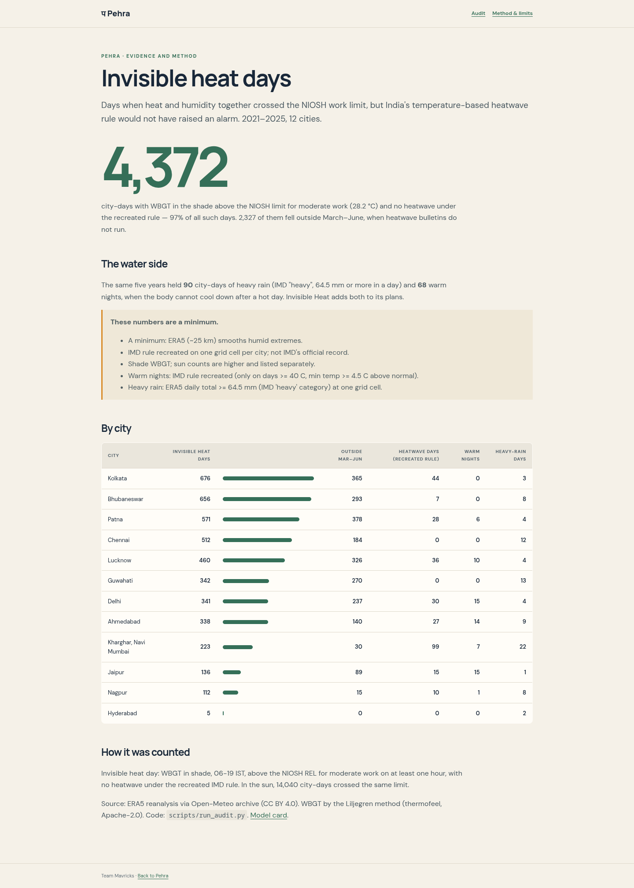
The live audit page.
2. Pehra on WhatsApp, as four stories
Recorded on a real phone (moto g34, Android 15) on 11 October 2026 with the WhatsApp Cloud API test number and a Twilio trial call. The people are illustrated; the messages are real.
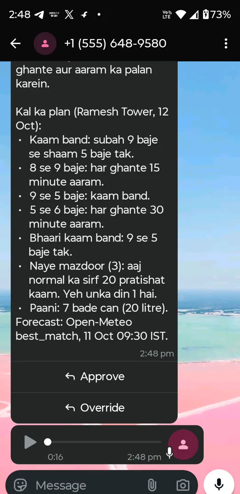
Ramesh, site supervisor
Registers his site in Kharghar and types the crew in plain Hindi: 40 log, 10 bhaari kaam, 3 naye aaye. Pehra reads it back. At 7 pm he gets tomorrow's plan: stop work 9 to 5, rest bands around it, heavy work stopped, new workers at 20%, 7 water cans, as text and a Hindi voice note. One tap on Approve saves it to a tamper-proof record. He can ask anything and the AI answers from the plan's own tools; only he can loosen a plan, with a written reason, and Cedar enforces that.
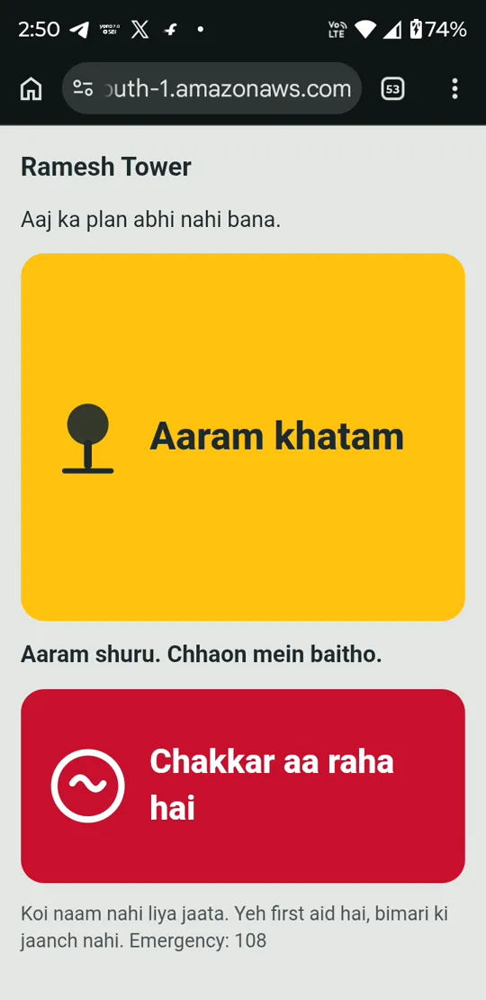
Gurpreet, worker
Scans the site QR. No app, no login. Logs a rest break. If he feels dizzy he taps Chakkar aa raha hai and sees fixed first aid. At that moment Ramesh gets a WhatsApp alert and his phone rings with a Hindi call.
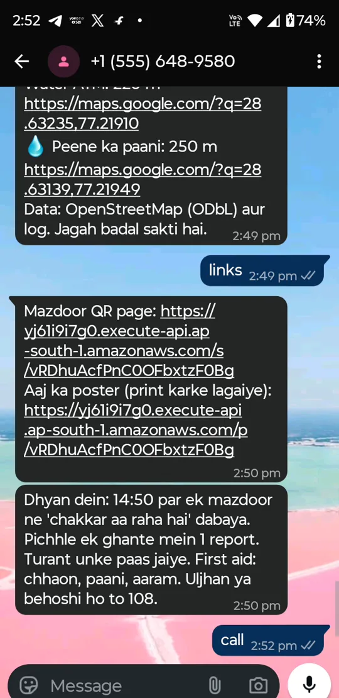
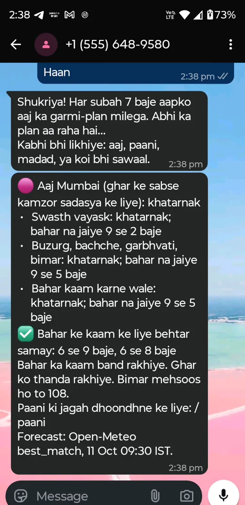
Meena, expecting, with Chotu and Dadi
Says hi, taps Mere aur parivar ke liye, answers five button questions about the household (counts only, never names) and gets today's plan with stricter limits for the elderly, children, pregnancy and illness. On dangerous days Dadi gets one Hindi phone call.
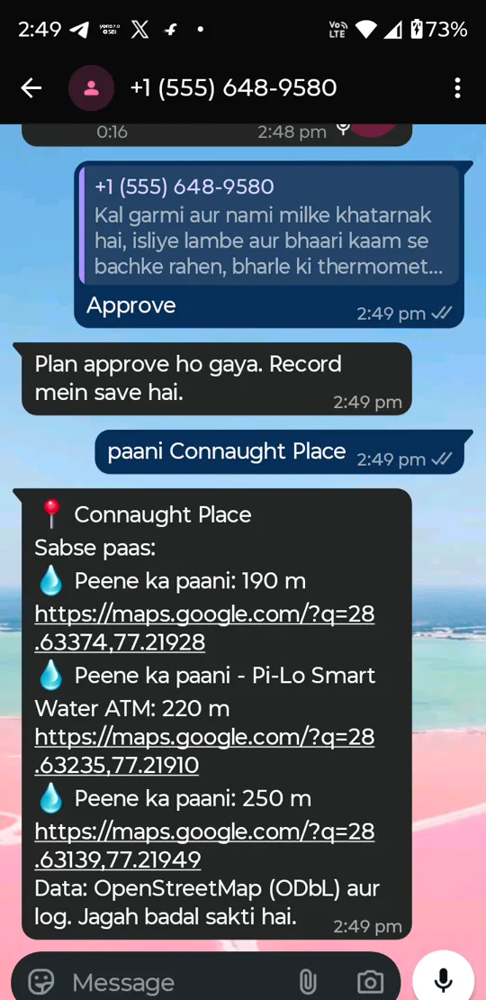
Lakshmi, street vendor
Types paani Connaught Place and gets the nearest drinking water and shade, 190 m away with a map link, from OpenStreetMap and community reports. Schools, shops and delivery riders get their own limits and lines.
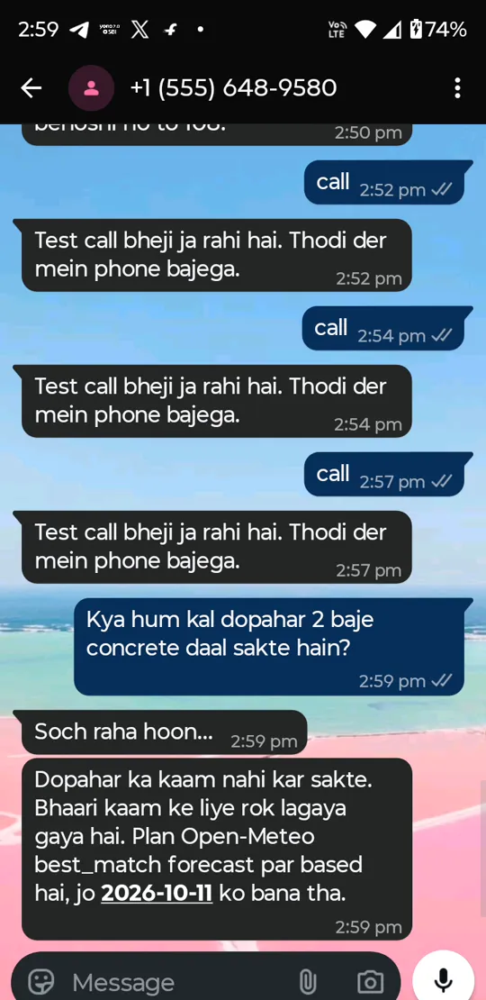
3. The Pehra Site Box
Some sites have no smartphone at all. For them, Pehra is a box: about ₹600 of parts around an ESP32. A DHT22 reads air temperature and humidity; a DS18B20 inside a matt-black globe reads radiant heat; together they give the real WBGT on the site every 10 seconds (0.7·Tnw + 0.2·Tg + 0.1·Ta). Two sonar sensors watch the drinking-water tank and the drain. The box acts: a 12-LED ring shows the risk colour, a siren rings at rest time, one relay runs a mist fan, another refills the tank, and a red SOS button calls the supervisor.
It publishes over MQTT/TLS with its own X.509 certificate to AWS IoT Core (a thing may publish only to its own topic). A rule invokes a Lambda that computes WBGT, applies the plan's rest bands, sends rate-limited alerts, stores the state in DynamoDB and publishes the command back. Every box gets a live 3D twin page.
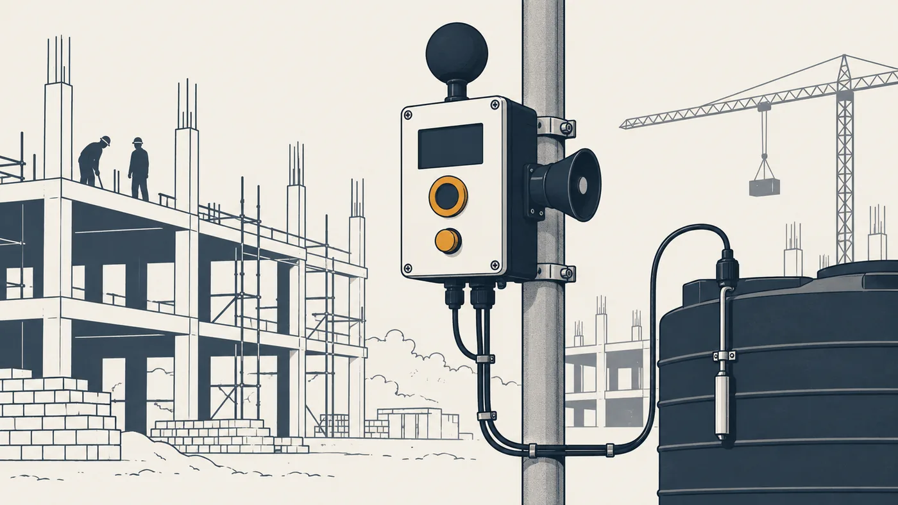
Running in the Wokwi simulator with the real firmware.
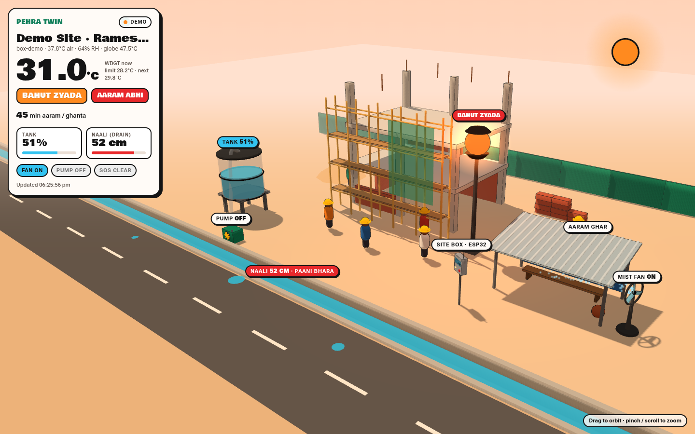
The live 3D twin.
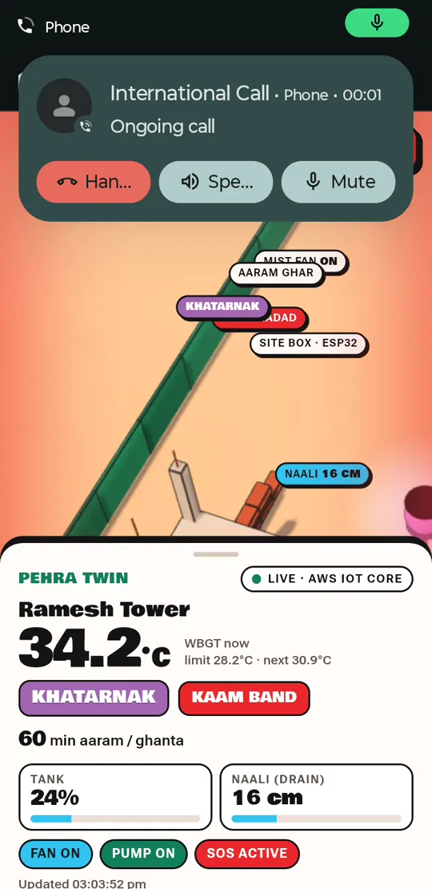
What happened on 11 October
A box was registered from WhatsApp with /device box. Readings published to IoT Core (WBGT 34.2 °C, khatarnak, tank 17%) started the pump and sent two WhatsApp alerts. The SOS button turned the twin red, sent a WhatsApp alert and rang the supervisor's phone in Hindi.
4. How it runs on AWS
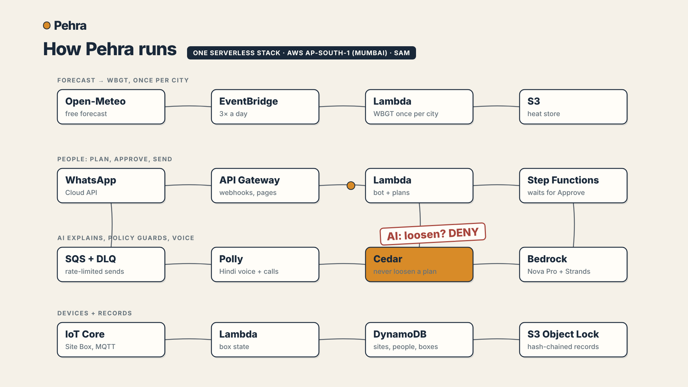
Row
Services
What they do
Forecast to WBGT
EventBridge Scheduler, Lambda (arm64), S3
Open-Meteo in, WBGT per city/tile out, three times a day
People
API Gateway, Lambda, Step Functions, SQS + DLQs, Polly, Transcribe
WhatsApp and Telegram webhooks; waitForTaskToken for Approve; rate-limited sends; Hindi voice
AI and policy
Bedrock (Nova Pro) with Strands Agents, Cedar
The AI explains; tools do the maths; a number check blocks invented numbers; Cedar denies LoosenPlan to the AI
Devices and records
IoT Core, Lambda, DynamoDB, S3 Object Lock
Site Box over MQTT; single-table data; hash-chained nightly records
5. Proof from the AWS account
CLI output rendered with freeze; the account id is masked.
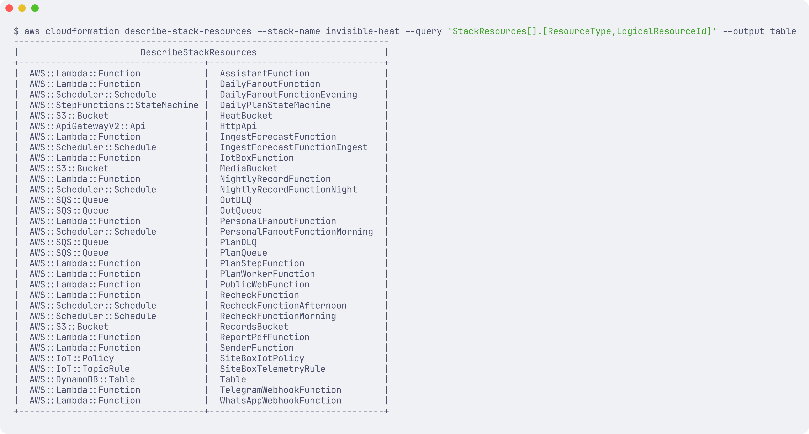
Stack resources.
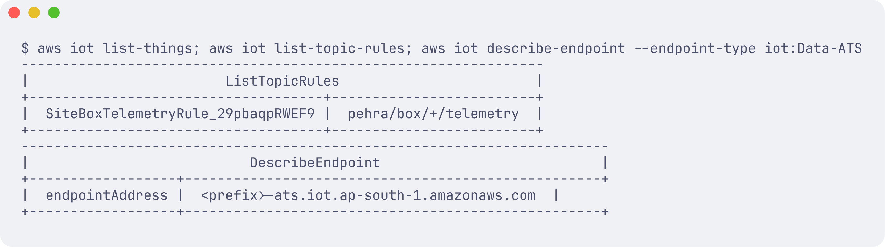
IoT Core: the provisioned Site Box thing, the telemetry rule, the endpoint.
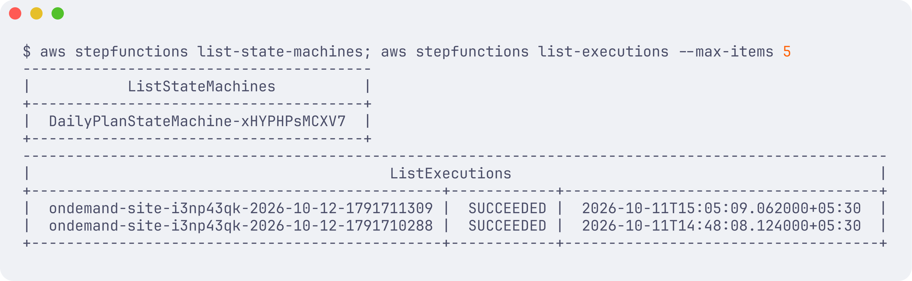
Step Functions executions.
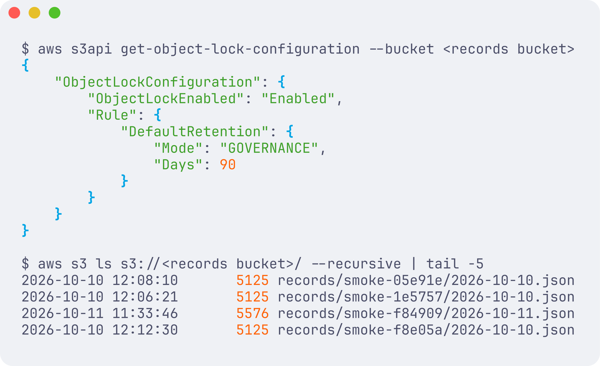
S3 Object Lock on the records bucket.
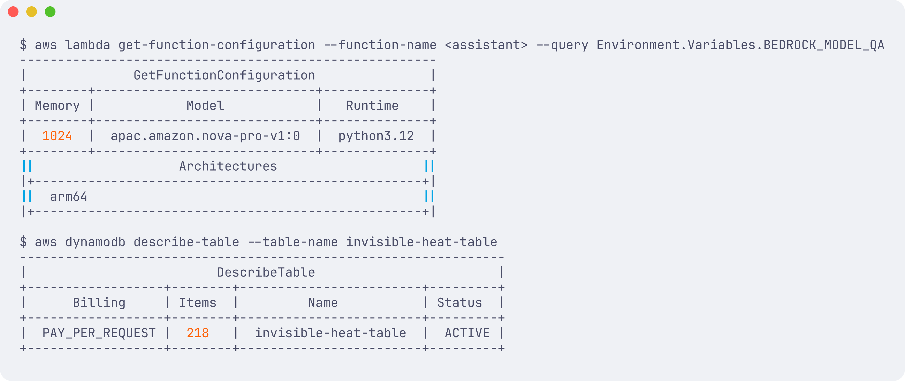
Lambda on arm64 with Bedrock; DynamoDB.
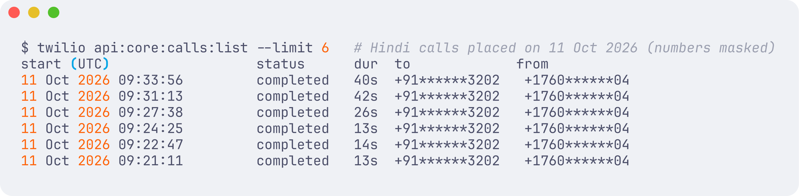
Twilio log: six completed Hindi calls on 11 October 2026.
6. Results, limits, what's next
Check
Result
WBGT vs OSHA calculator, 15 hours
Mean absolute difference 0.21 °C, max 0.49 °C
Cedar decisions
All required cases pass; the AI is denied LoosenPlan and OverridePlan
Every feature above, with the Hindi calls answered
Tests
246 passing
Limits
The weather grid is 11 to 25 km wide; the Site Box exists because real sites are hotter.
No claim of lives saved; not medical advice; not an official weather warning. The IMD rule is recreated, not IMD's record.
WhatsApp uses Meta's test number; calls use a Twilio trial. Box readings in the recording were published from a laptop script; the firmware is shown in Wokwi.
What's next
Pilots with worker groups and a labour department; WhatsApp scheduled templates and an Indian caller id; Tamil, Bengali and Odia voices; ECMWF ensembles; insurance and welfare triggers on the locked records.